The shelf
The whole screen stays the picture. A press on anything opens one surface, the shelf, with the answer at its top. Close, save, bookmark, share. Round CY, built over the shipped build with real data: James, his five story lines committed.
What the shelf is
It is the right rail, generalised, not a new thing beside it. The product already has exactly one place every press answers. The drills file opens with it: "Every element that carries data opens one. Same panel for all of them, so there is one place to look." That panel is the Selection section of the right rail. Its recorded history is answers landing where nobody is looking: under a Reading 1,440 to 1,888 pixels tall on a desktop, and 4,661 pixels under the picture on a phone.
The shelf keeps that panel and everything the rail holds, and changes three things:
- Closed by default. The picture gets the rail's width. The one line that was always true at the top of the rail, coherence and its band, stays on screen as the shelf's tab, in the upper right corner where it already sits.
- A press opens straight to the answer, at the shelf's top. The rest of the rail is the shelf's page view: the table of what this page holds.
- Desktop: a card over the stage's right lane. Phone: a sheet that rises from the bottom. One component, one set of states, anchored by width at the same 1180 pixel line where the product already stacks its rails.
Why a card over the lane and not a column that pushes. The first cut pushed. The pictures showed the wheel recentre and shrink the instant an address was pressed, so the thing pressed moved out from under the pointer, and the dock wrapped onto two lines. Now the picture never rescales. If the open shelf would cover the pressed mark, the Field pans by exactly the overlap and gives it back on close.
Why a sheet on a phone. On a phone the rail sits under the picture. A press there answered 4,661 pixels down the page with nothing on screen changing, which reads as the tap doing nothing. The sheet rises to half height and the page moves the pressed thing into the half still showing, ringed.
Moving
Real presses, recorded. Each opens on the product's own three second boot sheet.
Before and after, the Field
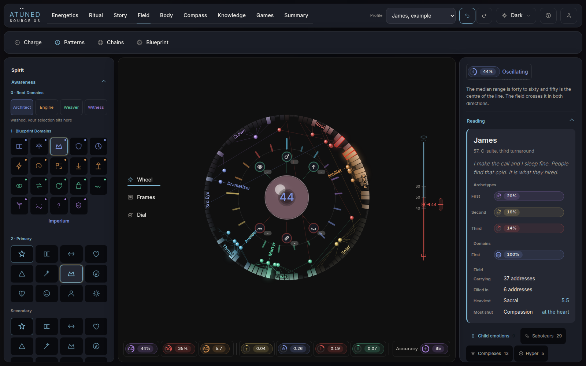
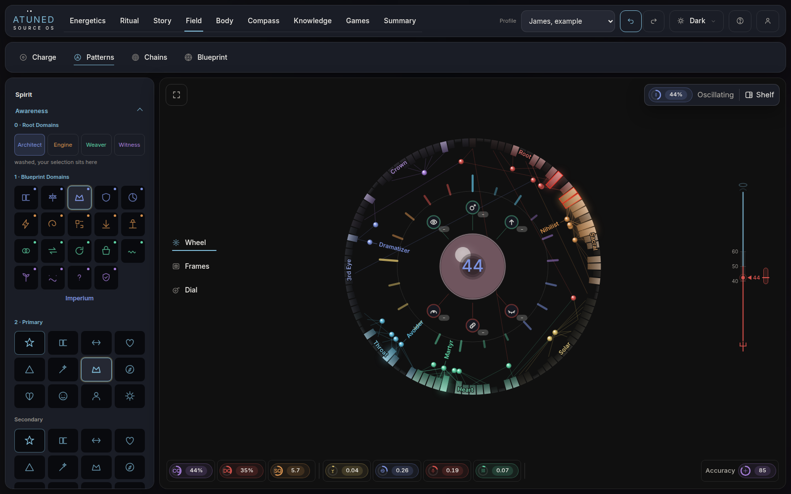
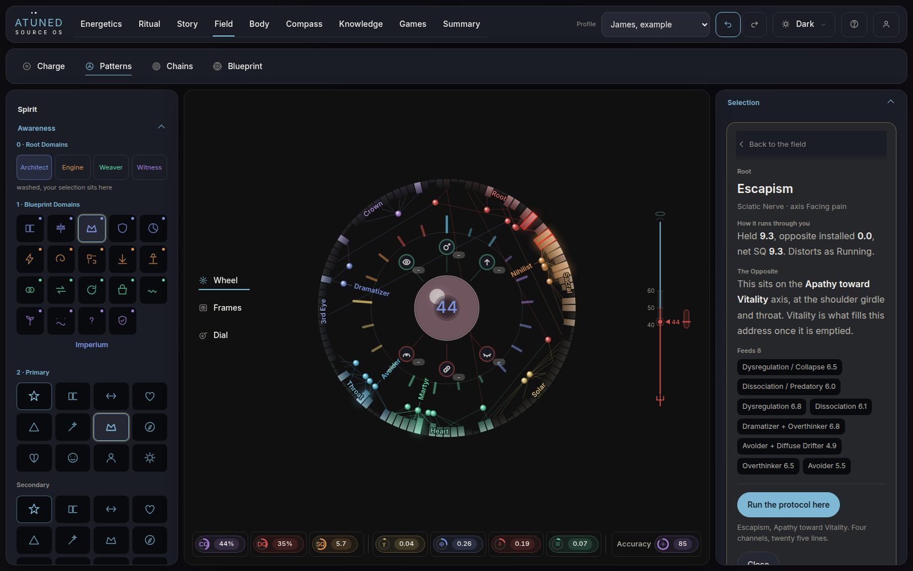
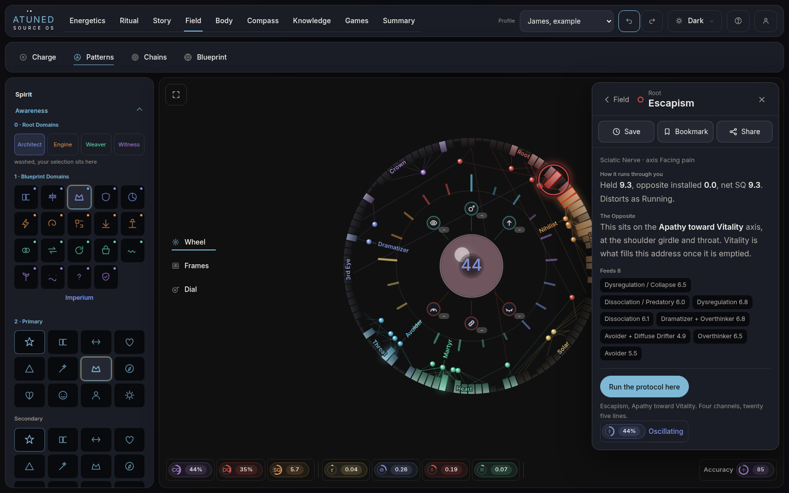
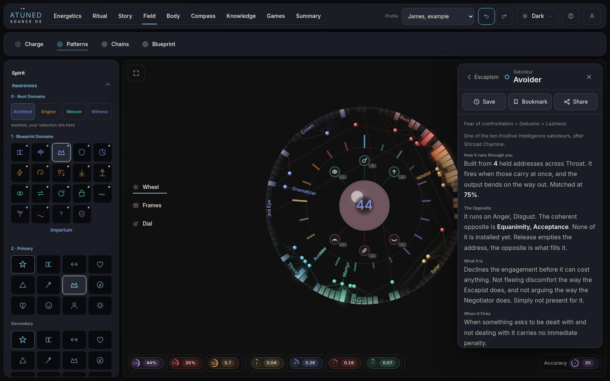
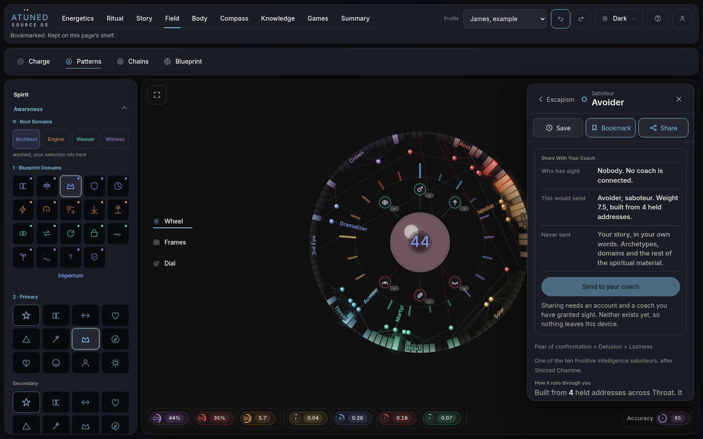
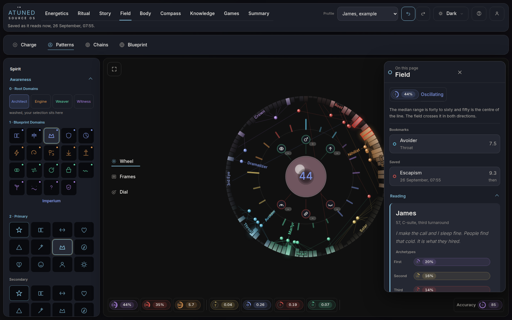
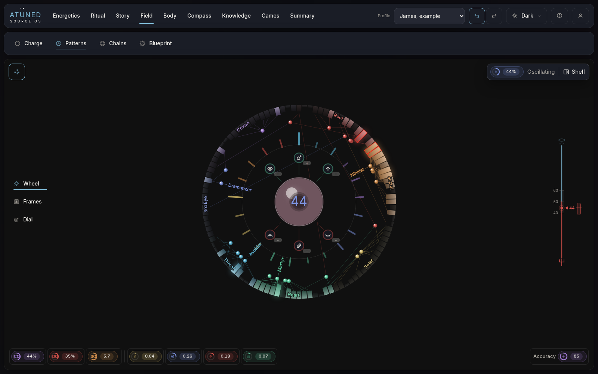
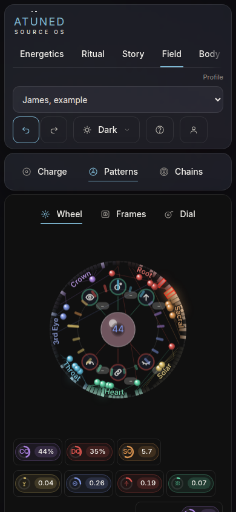
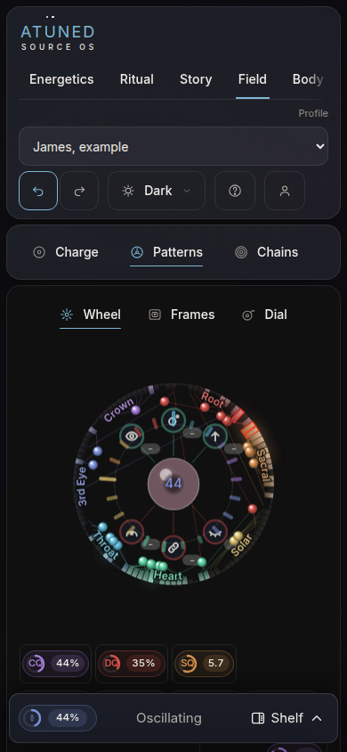
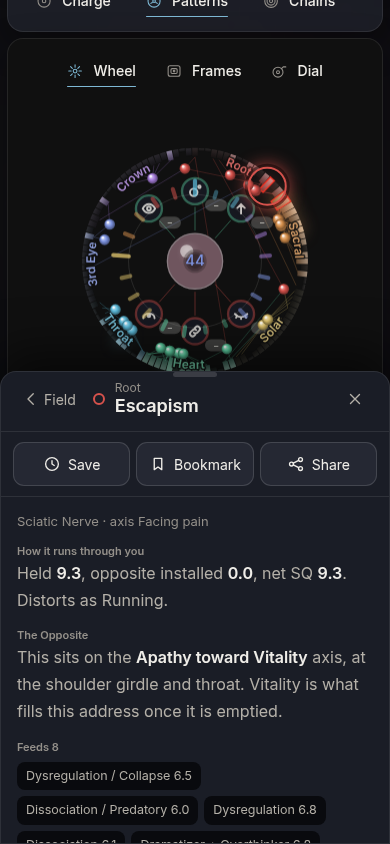
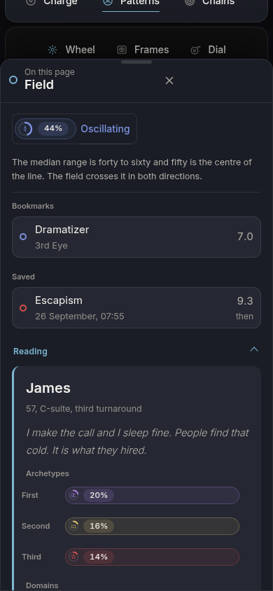
Before and after, Body
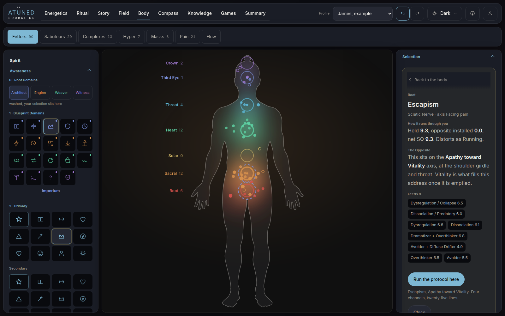
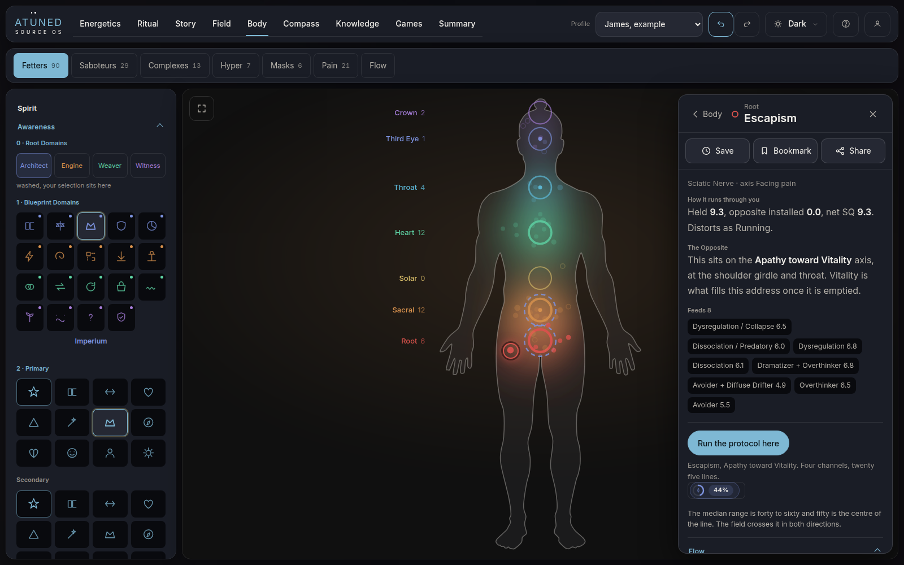
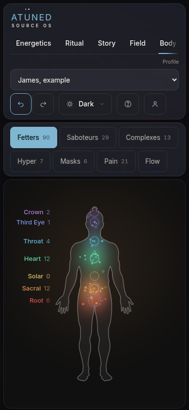
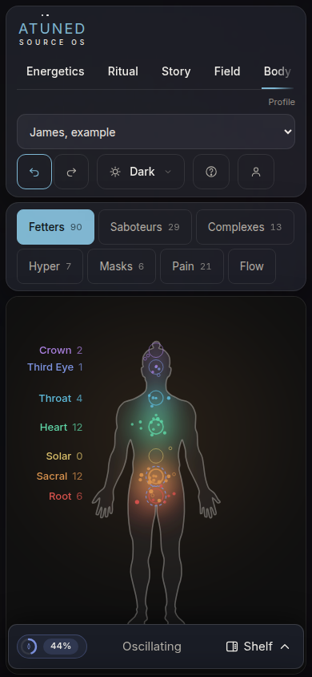
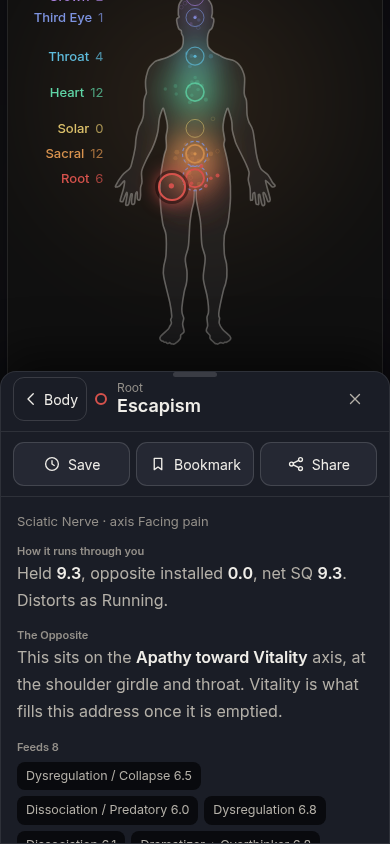
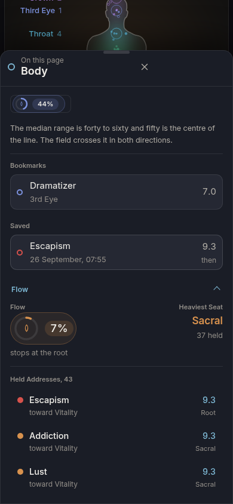
States
| State | Desktop | Phone | How you get there |
|---|---|---|---|
| Closed | A tab, upper right of the stage: the coherence ring, the band word, "Shelf". | A bar along the foot, same three things. | Start. Close. Escape. Drag the sheet down. |
| Opening | Fades and slides 24 px from the right, 320 ms, the product's surface timing. | Rises from the bottom, 320 ms. | No spinner: every answer computes in under 100 ms. Reduced motion is instant. |
| Page | The table of this page: the band line, Bookmarks and Saved when there are any, then the rail's sections. On Body the figure's list leads. Phone opens it full height. | The tab. Back from an item that was opened from the page. | |
| Item | Head: back, the seat's ring colour, the name, close. Then Save, Bookmark, Share. Then the product's own answer for that thing, unchanged. The pressed mark is ringed on the picture. Phone opens it half height, draggable to full. | Any press on the picture, or a row in the page view. | |
| Second press | Swaps, never stacks. The open item goes on the trail and back reads its name. Pressing the same thing again puts it down, the product's existing rule. Two items are compared by bookmarking both, not by two open panels. | ||
| Empty press | A press on empty stage does nothing to the shelf. It stays open until closed on purpose. | ||
The four abilities
| Ability | What it does | Today, with no accounts |
|---|---|---|
| Close | Puts the shelf and the pick down. Escape does the same. Back goes one step, to the last item, then to the page. | Complete. |
| Bookmark | Keeps a pointer to the thing. It reads live: the page view shows its value now. The slot keeps its label, the ring shows it is on. | Complete, kept on the device. On a worked example it is kept too, since exploring an example is what an example is for. |
| Save | Keeps what the answer says right now, dated. Opening it shows it as it read then, beside the value now, with a way to open it as it reads now. | Complete, kept on the device. The product refuses a save on a worked example with its own sentence, "Nothing saved on a worked example." The prototype lets it through so the list can be seen. |
| Share | Opens a pane in the shelf: who has sight, what this item would send, what never goes. The send is off, and says why. | The shelf's side only. The mechanism behind it is deferred, below. |
What share knows, from what is already ruled
The owner's own rulings, on the tier ladder: a cohort lead sees "Fetters, saboteurs, complexes, hyper complexes, and their analytics. Not the spiritual material and not the story cloud." And the story is "stored, for recovery, never shared." So every item carries a class. Addresses, saboteurs, complexes, seats and the core would send. Archetypes and domains would not. A reference card has nothing of the person in it. Laws of integrity are not named in the ruling, so the pane says it is not settled rather than guessing.
What is deferred, and why
- The coach connection itself. The ruling on the practitioner: either side can start it, the person consents, access is by the person's key. That handshake, the list of who has sight and revoking it need accounts, which are their own open work.
- Whether a share is a copy or a pointer. If a coach already has standing sight of the record, Share is really "point your coach at this", with a note, and nothing is copied. If they do not, a per item share is a second, narrower grant. That is a question for the owner, below.
- Scope. "Whether a practitioner sees all of it instead of the tier scope" is still open in the rulings. The pane reads whatever is ruled.
What it replaces or absorbs
| Today | With the shelf | Cost |
|---|---|---|
| The right rail column, 336 wide, every tab | Gone as a column. The stage takes its width. | None while closed. Open, the card covers the stage's right lane. |
| Rail top line, coherence and band | The shelf's tab, same corner, same ring. | Its one line definition moves into the page view. |
| Reading | The Field's page view. | One press away instead of always showing. |
| Selection, the drill | The shelf's item view. This is the heart of it. | None. Its own back row and foot close fold into the shelf's head. |
| Flow, Body's list of held addresses | Leads Body's page view. | One press away. |
| Running, Moral integrity | Sections of the page view, unchanged. | The law sliders are tools in an information surface. Question below. |
| Run a release | Foot of the page view. | Measured today at 4,165 px down the rail's own scroll at 1600, so nothing it has now is lost. |
| The Field's coherence compass, right lane | Unchanged while closed. | Covered while the shelf is open on a desktop. |
| Body, a press on an address | Answers as the address. | A change of behaviour: it opened the seat. The seat stays lit on the figure. |
The count
| Same press, Escapism, on James | Before | After |
|---|---|---|
| Stage width, 1600 | 922 | 1,268, and 1,580 expanded |
| Answer to a press on screen, 1600 | yes, y 314 | yes, y 197 |
| Answer to a press on screen, 390, Field | no, 4,661 px down | yes, y 395 |
| Answer to a press on screen, 390, Body | no, 4,414 px down | yes, y 395 |
| Visible controls, Field idle, 1600 | 91 | 82, and 34 expanded |
| Visible controls, Body idle, 1600 | 81 | 73 |
| Which thing is open, marked on the picture | no | yes, ringed |
Read the control count honestly. The shelf alone moves the desktop from 91 to 82, because 48 of those 91 visible controls are the left rail's tools. The shelf clears the right. The expand control clears the left, and that is where the count actually drops. Counted as visible, enabled, unobstructed controls in the viewport; the canvas's own marks are one element and are not in it, so both sides are floors.
Questions
1. Save and Bookmark, two things or one? Built as two. Bookmark follows the thing and reads live. Save keeps what it said today, so a later look shows then beside now, which is the avatar improving made visible. The other way: one control that does both. Fewer choices, but you lose "then against now" as a separate list.
2. "Share it with your profile person, your coach." Read as one person: your coach. Or did "profile person" mean another profile on the same device, like a partner?
3. A share is a copy, or a pointer? If your coach already sees your record, share just points them at this item with a note, nothing copied. If they do not, share is a one off grant of this one item. The first is simpler and safer. The second lets a person share without opening the whole record.
4. "A button to expand the overlay." Built as the expand control, top left of the stage: the tools fold and the picture takes the screen. Is that the button you meant, or did you mean a control on the animation overlay itself?
5. The left rail. The shelf clears the right. Most of what competes on a desktop screen is the left rail's tools. Should the tools become a second shelf on the left, closed until wanted, or stay open with expand as the way to clear them?
6. The law sliders. Moral integrity has sliders, which are tools, inside an information surface. Move them to the left rail with the other tools, or leave them where people already find them?
7. Body, a press on an address. Answers as the address now, not its seat. Keep that?
How this was built
build.js reads the shipped source.html and lays shelf.css and
shelf.js over it. Nothing under atuned_src/ is touched. Every answer in the
shelf is the product's own drill, written by its own functions. before.js,
shoot.js, record.js and measure.js drive it with real presses and
write every picture and number on this page.